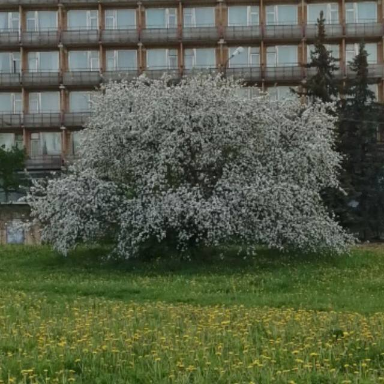

Обратно на главную
Яблоня

Это дерево посреди поля у гостинницы. В Пущино все хорошие места на расхват,
но эту яблоню с 6 стволами и кучей удобных веток, все как будто не замечают.
Мы провели на ней огромное количество времени, знаем каждую ветку наизусть и
это место стало очень важным для нас. Ее форма напоминает четырехлистник и это
стало самой первой идеей для названия нашей дружеской банды. Цветет она раз в
год и у нее очень вкусные яблоки, а для нас они самые вкусные на свете.
Треугольник дьявола
Это две яблони слева у пятерочки с библеотекой. Их ветки подходят настолько близко
друг с другом, что можно сидеть на разных яблонях плечом к плечу. Самые толстые
ветки образуют треугольник, оттуда и название.
Стелла
памятник, так же именуемый "прищепка". Там всегда гуляет большая банда веселых
ребят из соседних домов и не только. Мы - ее часть. Чаще всего про них говорят
стельцы
Мамонт
Холм с огромным оврагом и ручьем внизу (или скорее прорванной трубой), формой напоминающий мамонта
и по которому очень весело лазать
Поваленная верба у одинокой березы, штаб, пущинская горка,
Усадьба, родники, ЛЭП(высоководка), ФИАН, лес, Дельфин, Коса, заброшки и многие другие.
Пущино
Все эти места находятся в маленьком научном городке "Пущино", у реки Оки. Это замечательное место,
где дети постоянно гуляют и смеются. В одной части города - институты и телескопы, а в другой -
дома, магазины и река. Сейчас город становится все больше похож на самый обычный, с высокими зданиями
и шумом машин. Но те, кто жили здесь и знают каждую улицу, знают кучу секретов, историй и легенд о
городе. И самое интересное - Пущино везде. Где бы ты потом не жил, в какой угодно стране и городе, там
совершно точно есть другой, знакомый или нет, человек из Пущино. Это проверенно на опыте множества людей, да
и чего удивительного, ученые всегда ездят. Ведь когда-то Пущино называлось "окно в мир".